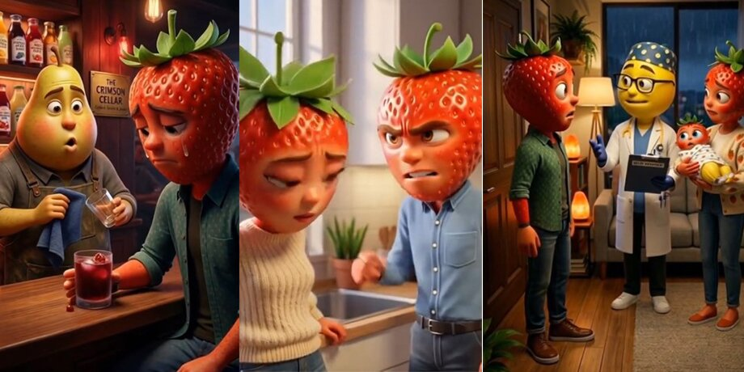

ИИ банан-это фрукт сделаный нейросетью. Банан-директор клубники или иногда один из главных персонажей.Также он обычно злой и навящевый. Банан любит клубничку и не любит клубнику(мужа клубнички). Он довольно крутой, потому что не боится мужа клубнички

ИИ клубничка-это фрукт сделаный нейросетью. Клубничка любит своего мужа, но директор Банан хочет, чтобы клубничка была его женой. Клубничка обычно беременет от Банана и рождает от него сына. Муж клубники понимает, что это не его ребёнок и прогоняет клубничку. Клубничка слабая характером и часто плачет. Она хочет быть с её мужом, но директор не хочет этого. Она идёт к его жене и показывает ребёнка. Жена банана проганяет мужа и тот бежит к клубничке. Клубничка всё обьясняет мужу, и он принимаел её обратно.
ИИ Баклажан-это овощь сделаный нейросетью. У ИИ Баклажана есть свой лор. Он родился от банана и клубники. Такое произошло из-за мутации. Про баклажана мало информации, но известно, что он служил во времена СССР. Баклажан стал героем СССР и до сих пор жив. Он находится в С.Молочное: и сражается с пауками. Сейчас ему 67 лет и он мутант.
ИИ огурец-это овощь сделаный нейросетью. Он брат банана и любит помидорку. Помидорка-это сестра клубнички. Огурец директор магазина одежды для женщин. Огурец также является магом из древнего мухосранска. У него есть волшебная палочка. Его волшебная палочка оторвана от великого древа Бррр Бррр Патапим не потопим. Он был шпионом США и его сослали в ссылку. Ссылка была в С.Молочное. Там огурец повстречал баклажана и они подружились. К сожалению огурец погиб в 1488г. он призвал бога капучины балерины. И она облила его кофе.
ИИ Сникерс-это батончик сделаный нейросетью. Он появлялся в серии с шоколалкой и клубничкой. Сникерс муж шоколадки. Он тайный агент ФБР, его разыскивает пинтагон, потому что он украл у них информацию про SCP Тун тун тун сахур. Он родом из Африки, а именно из Центральной Африки. Его родители Марс и Баунти не знали, что их сын робот. Он смог победить Та та та сахура и получил волшебный артефакт. Этот артефакт мог заставить любой фрукт подченяться тебе. Он смог создать армию из баклажанов и напасть на Великую Китай Партию. Но он проиграл ей и отправился в Мадагазан. Там он встретил четырёх пингвинов и они показали ему робот Свинка пепа 3000. Сникерс сел в этого робота и напал на Туркей(робот индейки). Они сражались 67 дней и 67 ночей. В итоге сникерс победил и стал править Империей Сушёной Индейки.
Камин у него особый лор. У некоторых людей в шесть утра камин начинает кастовать силу земли. Из пола появляются тысячи диких огурцов. Они делают из себя миллион бешеных огурцов, а те стреляют в хозяев дома. Такие камины называют SCP 148867. Чтобы они не напали на вас вам нужно съесть один огурец вечером и кинуть молоко в камин. Но бывают легендарные камины. Они призывают миллиард богинь Балерин Капучин. В таких случиях вы должны позпонить в 677 и сказать код:Газан сигма бой твой папа фембой. К вам приедет спецназ из Джорджов и Свинок Пеп и потушат его.
Тун тун Сахур-это древний бог мира майнкрафта.
Он является тем кто нуждается в вправление мозгов. Иногда он появляется в Чернобыле, чтобы потихоньку, без суеты чинить реактор. Огневая мощь у него равна миллиону танков. Но у него есть и плохая сторона. Тун тун бог украл Балерину Богиню в детстве и стал королём ИИбогов. Даже ИИсус не может его победить. Тун тун бог один из трёх Великих Воздуханитов. Воздуханиты-это императоры воздуханов. Воздуханиты правят миров Роблокса и миром Бравл Старса. Остальную информацию прячет тун тун бог всоих файлах.
Балерина капучина-это богиня котороую похител тун тун бог. Она также является легендарным камином в шесть утра. Её папа баклажан, а мама клубника. Балерина богиня на самом деле мальчик, но это большой большой секрет. Она сидит в клетке сделаной из слёз её мамы.
Балерина капучина сестра Экспресона сеньеры. Её сестра страшная женщина.
Воздухан вентилятор-это человек с вентилятором вместо головы. Они летают по ночям и залетают в дома людей. Летают они на воздушном поровозике двигающийся с помощью угля из Бррр Бррр Патапима. Воздуханы легенда из книги "Легенды из тик-ток". Воздуханы появляются 6 цисла в 7 утра. Обитают они в городе "Воздушенске". Воздухан вентилятор умеет призывать торнадо и вихри. Они являются помощниками второго Великого воздуханита. Воздуханиты находятся на верхушке иерархии. Считается, что в древности было десять воздуханитов. Правда все они погибли и стали статуями. Статуи излучают энергию воздуха.
Думаю понятно, что у них на голове. Таких воздуханов существует только три. Если их соединить во едино, то они могут напитать статую энергией и оживить воздуханита на час. Именно из-за этого они и являются служащими у воздуханита.
Статуи появились в 6767г. до н.э., они появились после Великой войны расс. Сражались пять расс: Воздуханы, ИИфрукты, ИИбоги, ИИспец отряд и брейнроты. В итоге победили три рассы. Воздуханы, ИИ фрукты и ИИ боги. Превратилось в статую четыре бренрот воздуханита и три воздуханита младенца. Поэтому оставшиеся воздуханиты заключили союз. Из всех статуй самая сильная статуя Сунь хунь в чай. Именно он запечатал трех воздуханитов. Существует легенда, что когда рак взойдёт на гору со свистком. В глубокой глуши леса, в далёком доме родится ребенок балерины капучины и тралалеро тралала. Именно он сможет оживить статуи воздуханитов. К сожалению это произойдет только через шесть или семь миллионов лет. К тому моменту все люди вымрут и будут только роботы.